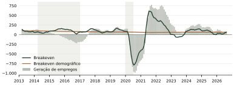
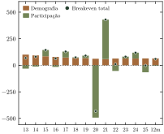
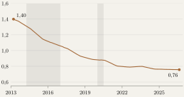
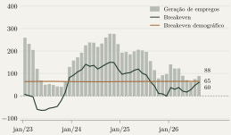
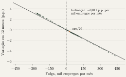

Destaques
O breakeven está mais baixo. O Brasil precisa gerar cerca de 60 mil empregos por mês para manter a taxa de desemprego estável. O componente demográfico do breakeven caiu de 100 mil em 2013 para 65 mil, porque a população em idade de trabalhar cresce hoje cerca de metade do que crescia.
Fim de 2025. A geração de empregos caiu de 155 mil para 97 mil por mês, na média de 12 meses, e mesmo assim o desemprego continuou caindo cerca de 1 p.p. ao ano, porque a queda da participação levou o breakeven para perto de zero.
2026. A participação parou de cair e o breakeven voltou a 60 mil. Com a geração de empregos em 88 mil por mês, a diferença em relação ao breakeven caiu para 28,5 mil, e a queda do desemprego em 12 meses diminuiu para 0,3 p.p.
Regra prática. Cada 10 mil empregos por mês acima do breakeven, mantidos durante um ano, reduzem a taxa de desemprego em cerca de 0,1 p.p.
O que acompanhar. Se a participação voltar a crescer no ritmo de 2019, uma geração de 90 mil empregos por mês apenas manterá o desemprego estável.
Como ler o dado mensal
Todo mês, a PNAD Contínua informa quantas pessoas a mais estão empregadas no país. Esse número, sozinho, diz pouco sobre o aperto do mercado de trabalho, porque o efeito sobre o desemprego depende também de quantas pessoas entram na força de trabalho no mesmo período. Uma alta de 80 mil empregos por mês pode reduzir o desemprego em um ano e aumentá-lo em outro.
Podemos usar como referência o breakeven, ou seja, quantos empregos a economia precisa gerar por mês para manter a taxa de desemprego onde está. O Fed de São Francisco publica essa medida para os Estados Unidos (Petrosky Nadeau e Stewart, 2024). Nesta nota, calculo o breakeven para o Brasil com a PNAD mensal de março de 2012 a agosto de 2026, mostro como a diferença entre a geração de empregos e o breakeven se traduz em variação do desemprego e separo o breakeven em uma parte demográfica e uma parte ligada à participação na força de trabalho. As contas estão no Quadro 1.
Quadro 1: Como o breakeven é calculado
Seja o número de pessoas empregadas e a força de trabalho. A taxa de desemprego é . Para que não mude de um mês para o outro, o emprego precisa crescer vezes o aumento da força de trabalho. Esse é o breakeven: (1) Chamo de folga a diferença entre a geração de empregos e o breakeven, . A folga determina exatamente a variação da taxa de desemprego, (2) e, em doze meses, uma folga média altera a taxa em cerca de (3) pontos percentuais. Com uma força de trabalho de 109 milhões de pessoas, isso equivale a 0,011 p.p. para cada mil empregos por mês. Como a força de trabalho é a população em idade de trabalhar multiplicada pela taxa de participação , vale a decomposição exata , e o breakeven pode ser escrito como (4) O primeiro termo é o número de empregos necessário para absorver o crescimento da população com a participação constante. O segundo reflete as pessoas que entram ou saem da força de trabalho.
Dez anos de ciclos
O Gráfico 1 compara a geração de empregos com o breakeven desde 2013, e a Tabela 1 resume os principais períodos. Na recessão de 2015 e 2016, o emprego caiu em média 129 mil por mês enquanto a força de trabalho continuava crescendo, e a taxa de desemprego subiu de 6,6% para 12,1%. Na recuperação, entre 2017 e 2019, a geração de empregos superou o breakeven em apenas 32 mil por mês, e o desemprego caiu cerca de um ponto em três anos.
Gráfico 1: A geração de empregos supera o breakeven desde meados de 2021
Mil empregos por mês, médias de 12 meses. Áreas cinzas: recessões (CODACE).

Fonte: IBGE (PNAD Contínua); cálculos do autor.
Ver dados
Em 2020, o emprego caiu 688 mil por mês, mas a força de trabalho também encolheu, cerca de 480 mil por mês, porque muitas pessoas deixaram de procurar trabalho. O desemprego subiu 3,1 p.p.; se a participação tivesse ficado constante, as mesmas perdas teriam elevado a taxa em cerca de 9 p.p. Em 2021 e 2022 ocorreu o contrário: a volta dessas pessoas à força de trabalho elevou o breakeven para 220 mil por mês, a geração de empregos foi ainda maior e o desemprego caiu mais de seis pontos. A folga medida em 12 meses é positiva desde julho de 2021 e levou a taxa de desemprego a 5,1% em dezembro de 2025, o menor nível da série.
Tabela 1: Geração de empregos, breakeven e desemprego por período
Médias mensais, em mil. Variação do desemprego desde o fim do período anterior.
| Breakeven | Desemprego | ||||||
|---|---|---|---|---|---|---|---|
| Período | Geração de empregos | Total | Demografia | Participação | Folga | Variação (p.p.) | Fim (%) |
| 2013 a 2014 | 89 | 75 | 97 | −22 | 14 | −0,3 | 6,6 |
| 2015 a 2016 | −129 | 104 | 82 | 22 | −233 | +5,6 | 12,1 |
| 2017 a 2019 | 130 | 98 | 70 | 28 | 32 | −1,1 | 11,1 |
| 2020 | −688 | −431 | 61 | −493 | −256 | +3,1 | 14,2 |
| 2021 a 2022 | 494 | 220 | 61 | 159 | 274 | −6,2 | 7,9 |
| 2023 a 2025 | 152 | 66 | 64 | 3 | 86 | −2,9 | 5,1 |
| Últimos 12 meses | 88 | 60 | 65 | −5 | 29 | −0,3 | 5,3 |
Últimos 12 meses: setembro de 2025 a agosto de 2026. Componentes podem não somar por arredondamento.
A queda do componente demográfico
Em 2013, o Brasil precisava gerar cerca de 100 mil empregos por mês apenas para acompanhar o crescimento da população em idade de trabalhar. Hoje, esse número é de 65 mil (Gráfico 2).
Essa queda acompanha a desaceleração da população de 14 anos ou mais, que cresceu 1,40% nos 12 meses até março de 2013 e 0,76% nos 12 meses até agosto de 2026 (Gráfico 3). As gerações que chegam agora à idade de trabalhar nasceram depois da queda da fecundidade e são menores, e o IBGE projeta que a população total pare de crescer em 2041 (IBGE, 2024). A taxa de participação, por outro lado, não tem tendência definida: fora da pandemia, ficou entre 61,4% e 63,6% desde 2012 e estava em 62,2% em agosto. Ela explica as oscilações do breakeven de um ano para outro, enquanto a queda ao longo da década vem da demografia.
Gráfico 2: O componente demográfico do breakeven caiu um terço desde 2013
Breakeven por componente, mil empregos por mês. Médias anuais e dos últimos 12 meses.

Fonte: IBGE (PNAD Contínua); cálculos do autor.
Ver dados
Gráfico 3: O crescimento da população em idade de trabalhar quase caiu à metade
População de 14 anos ou mais, variação em 12 meses, %. Áreas cinzas: recessões.

Fonte: IBGE (PNAD Contínua); cálculos do autor.
Ver dados
O breakeven em 2025 e 2026
No segundo semestre de 2025, a geração de empregos desacelerou, com a média de 12 meses passando de 155 mil por mês em agosto para 97 mil em dezembro (Gráfico 4). Mesmo assim, o desemprego continuou caindo cerca de 1 p.p. ao ano, porque a participação recuou e levou o breakeven de 63 mil para perto de zero. A folga terminou dezembro em cerca de 99 mil empregos por mês.
Em 2026, a participação parou de cair, e sua contribuição para o breakeven passou de mil para mil por mês, o que levou o breakeven de volta a 60 mil. A geração de empregos caiu para 62 mil em junho e voltou a 88 mil em agosto, um pouco abaixo do nível de dezembro. Entre dezembro e agosto, a folga diminuiu cerca de 70 mil por mês, para 28,5 mil, e 61 mil dessa redução vieram da alta do breakeven. Com isso, a queda do desemprego em 12 meses passou de 1,1 p.p. em dezembro para 0,3 p.p. em agosto.
Uma regra prática para o dado mensal
A equação (3) permite traduzir um cenário para a geração de empregos em uma trajetória para o desemprego, desde que se tenha uma hipótese para o breakeven. Essa conversão quase não mudou desde 2013, porque a força de trabalho varia devagar (Gráfico 5): 10 mil empregos por mês acima do breakeven, durante um ano, reduzem o desemprego em cerca de 0,1 p.p. A Tabela 2 aplica a regra a uma geração de 90 mil empregos por mês, próxima da leitura mais recente. Se a participação ficar estável, o breakeven fica igual ao componente demográfico, de 65 mil, e o desemprego cai mais 0,3 p.p. em 12 meses. Se a participação crescer como em 2019, o breakeven sobe para cerca de 90 mil e o desemprego para de cair. No ritmo de 2024, o breakeven chega a 120 mil, e a mesma geração de empregos eleva o desemprego em 0,3 p.p.
Tabela 2: O que uma geração de 90 mil empregos por mês significa para o desemprego
Geração de empregos fixa em 90 mil por mês; breakeven sob três hipóteses para a participação.
| Participação | Breakeven (mil/mês) | Folga (mil/mês) | Variação em 12m (p.p.) |
|---|---|---|---|
| Estável | 65 | 25 | −0,3 |
| Crescendo como em 2019 | 90 | 0 | 0,0 |
| Crescendo como em 2024 | 120 | −30 | +0,3 |
Cálculos do autor, com força de trabalho de 109 milhões.
Experimente a regra
Variação aproximada em 12 meses, com a força de trabalho de agosto de 2026.
Gráfico 4: O breakeven caiu no fim de 2025 e subiu em 2026
Mil empregos por mês, médias de 12 meses. Valores de agosto de 2026 à direita.

Fonte: IBGE (PNAD Contínua); cálculos do autor.
Ver dados
Gráfico 5: Uma folga de 10 mil empregos por mês reduz o desemprego em cerca de 0,1 p.p. em um ano
Cada ponto é um mês, de março de 2013 a agosto de 2026. A reta usa a força de trabalho de agosto de 2026.

Fonte: IBGE (PNAD Contínua); cálculos do autor.
Ver dados
Implicações
Com o componente demográfico em torno de 65 mil, um ritmo de geração de empregos que em 2013 apenas mantinha o desemprego estável hoje é suficiente para reduzi-lo. Por isso, comparar o número atual com as médias da década passada tende a subestimar o aperto do mercado de trabalho.
Parte da queda do desemprego nos últimos anos veio do crescimento mais lento da força de trabalho. Para os salários, a origem dessa queda importa pouco, porque eles respondem à escassez de trabalhadores disponíveis. Ela importa, porém, para a persistência do desemprego baixo, que pode se manter com uma geração de empregos menor do que no passado.
A folga em média de 12 meses ajuda a interpretar a variação anual do desemprego. Uma folga positiva é compatível com queda anual da taxa, mesmo que ela suba em alguns meses. Em agosto, ela estava em 28,5 mil por mês, menos de um terço do nível de dezembro. Se a participação continuar se recuperando, o breakeven deve subir mais e a queda do desemprego pode parar, mesmo com a geração de empregos estável.
Dados
Dados da PNAD Contínua de março de 2012 a agosto de 2026, em trimestres móveis, com fluxos apresentados em médias de 12 meses. A pesquisa inclui trabalho informal e não é diretamente comparável ao Novo CAGED. O breakeven é retrospectivo e depende da participação.
Referências
CODACE, Comitê de Datação de Ciclos Econômicos. Comunicados de datação de ciclos econômicos. Rio de Janeiro: FGV IBRE.
IBGE (2024). Projeções da população do Brasil e das Unidades da Federação: revisão 2024. Rio de Janeiro: IBGE.
IBGE. Pesquisa Nacional por Amostra de Domicílios Contínua. Séries mensais. Rio de Janeiro: IBGE.